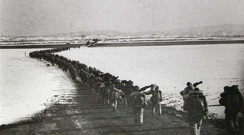

中国精神
社会主义革命和建设时期
社会主义革命和建设时期，指1949年10月至1978年12月党的十一届三中全会召开的一段历史时期。
中华人民共和国的成立开启了中国历史发展的新纪元，中国人民从此站立起来了。中国共产党团结带领全国各族人民，自力更生，艰苦奋斗，万众一心，奋发图强，建立了社会主义的基本制度，初步建立了独立的完整的工业体系和国民经济体系，取得了社会主义革命和建设的一系列伟大成就，为当代中国的一切发展进步奠定了根本政治前提和制度基础。

抗美援朝精神
我们要铭记抗美援朝战争的艰辛历程和伟大胜利，弘扬伟大抗美援朝精神，雄赳赳、气昂昂，向着全面建设社会主义现代化国家新征程，向着实现中华民族伟大复兴的中国梦继续奋勇前进。
——2020年10月23日，习近平在纪念中国人民志愿军抗美援朝出国作战70周年大会上的讲话
苏区精神
新时代的航天工作者要以老一代航天人为榜样，大力弘扬“两弹一星”精神，敢于战胜一切艰难险阻，勇于攀登航天科技高峰，让中国人探索太空的脚步迈得更稳更远，早日实现建设航天强国的伟大梦想。 ——2020年4月23日，习近平给参与“东方红一号”任务的老科学家的回信.
延安精神
延安精神培育了一代代中国共产党人，是我们党的宝贵精神财富。要坚持不懈用延安精神教育广大党员、干部，用以滋养初心、淬炼灵魂，从中汲取信仰的力量、查找党性的差距、校准前进的方向。
——2020年4月，习近平在陕西考察时的讲话
抗战精神
伟大抗战精神，是中国人民弥足珍贵的精神财富，将永远激励中国人民克服一切艰难险阻、为实现中华民族伟大复兴而奋斗。
——2020年9月3日，习近平在纪念中国人民抗日战争暨世界反法西斯战争胜利75周年座谈会上的讲话